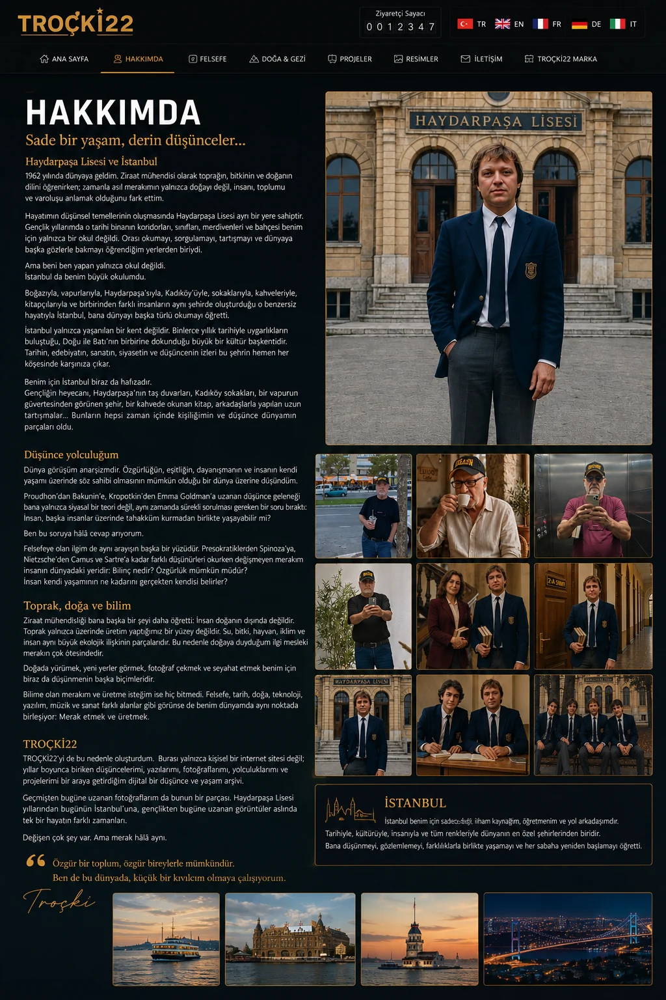

TROÇKİ22 • HAKKIMDA
Hakkımda
Haydarpaşa’dan toprağa, felsefeden üretime uzanan kişisel yolculuğum.
Hakkımda
Hakkımda yazısı önce kapalı görünür. Kartın üzerine dokunduğunda görseller ve tam metin açılır.
Haydarpaşa Lisesi • İstanbul • Yaşam
Haydarpaşa Lisesi, İstanbul ve Ben
Gençlik yıllarından bugüne uzanan düşünce, doğa, felsefe ve İstanbul yolculuğum.
Hakkımda yazısını oku →
Haydarpaşa Lisesi, İstanbul ve Ben
Gençlik yıllarından bugüne uzanan düşünce, doğa, felsefe ve İstanbul yolculuğum.
Hakkımda yazısını oku →
Haydarpaşa Lisesi, İstanbul ve Ben
1962 yılında dünyaya geldim. Hayatım boyunca doğayı, insanı ve toplumu anlamaya çalıştım. Ziraat mühendisliği bana toprağın, üretimin ve doğanın dilini öğretirken; felsefe, tarih ve toplumsal düşünce bana insanın kendisini ve dünyadaki yerini sorgulamayı öğretti.
Haydarpaşa Lisesi yıllarım düşünce dünyamın biçimlenmesinde ayrı bir yere sahiptir. O koridorlar, sınıflar, kitaplar, öğretmenler ve arkadaşlıklar yalnızca bir okul hatırası değil; dünyaya başka gözlerle bakmayı öğrendiğim bir dönemin izleridir.
İstanbul ise benim büyük okulum oldu. Haydarpaşa, Kadıköy, vapurlar, Boğaz, sokaklar, kahveler ve kitapçılar... Bu şehir yalnızca yaşadığım bir yer değil; beni ben yapan kültürel hafızanın önemli bir parçasıdır.
Bugün TROÇKİ22, yıllar boyunca biriken düşüncelerimi, yazılarımı, fotoğraflarımı, gezi notlarımı ve projelerimi bir araya getirdiğim kişisel bir düşünce ve yaşam arşividir.
“Beni yalnız yıllar değil; Haydarpaşa'nın koridorları, İstanbul'un sokakları, okuduğum kitaplar, gördüğüm doğa ve sorduğum sorular da biçimlendirdi.”